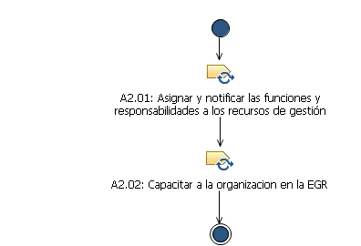
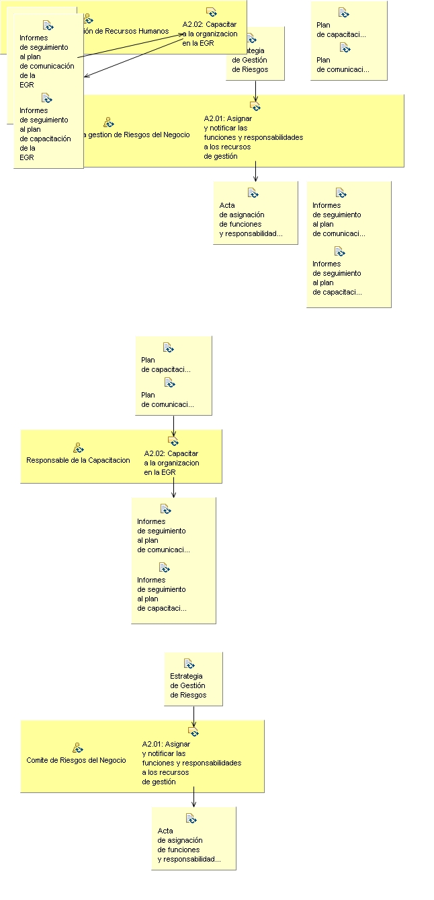

Patrón de posibilidad: A2. Preparacion para la implementacion
Descripción
Estructura de desglose de trabajo
Asignación de equipos
Utilización del producto de trabajo
Flujo de trabajo


Anomalía del trabajo